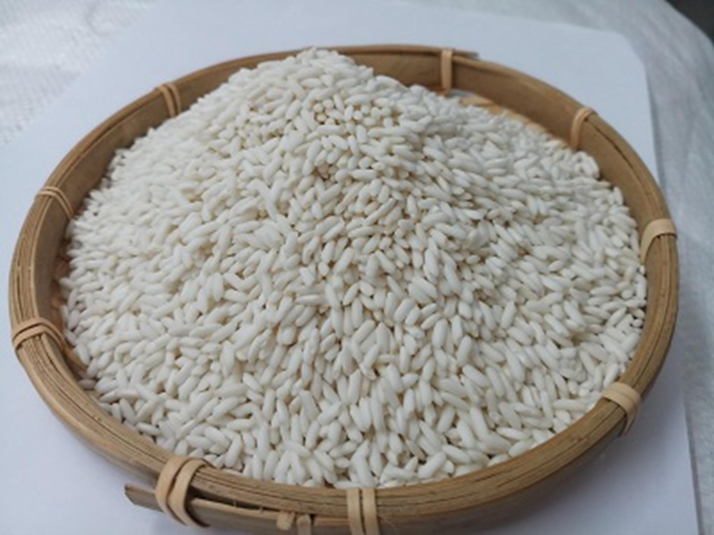
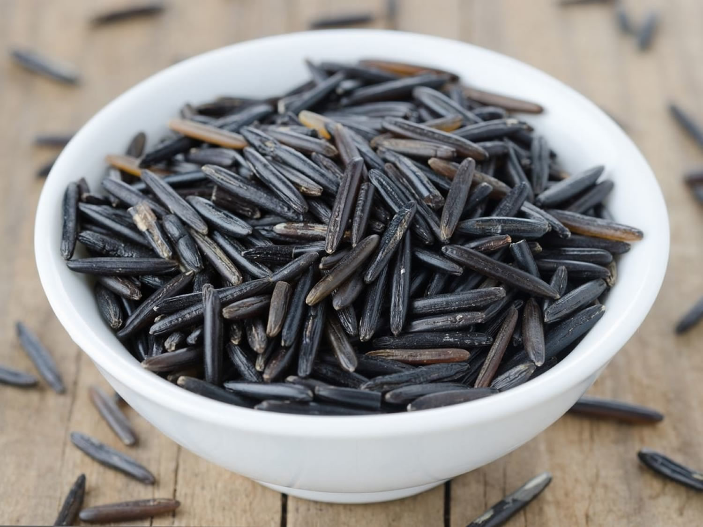
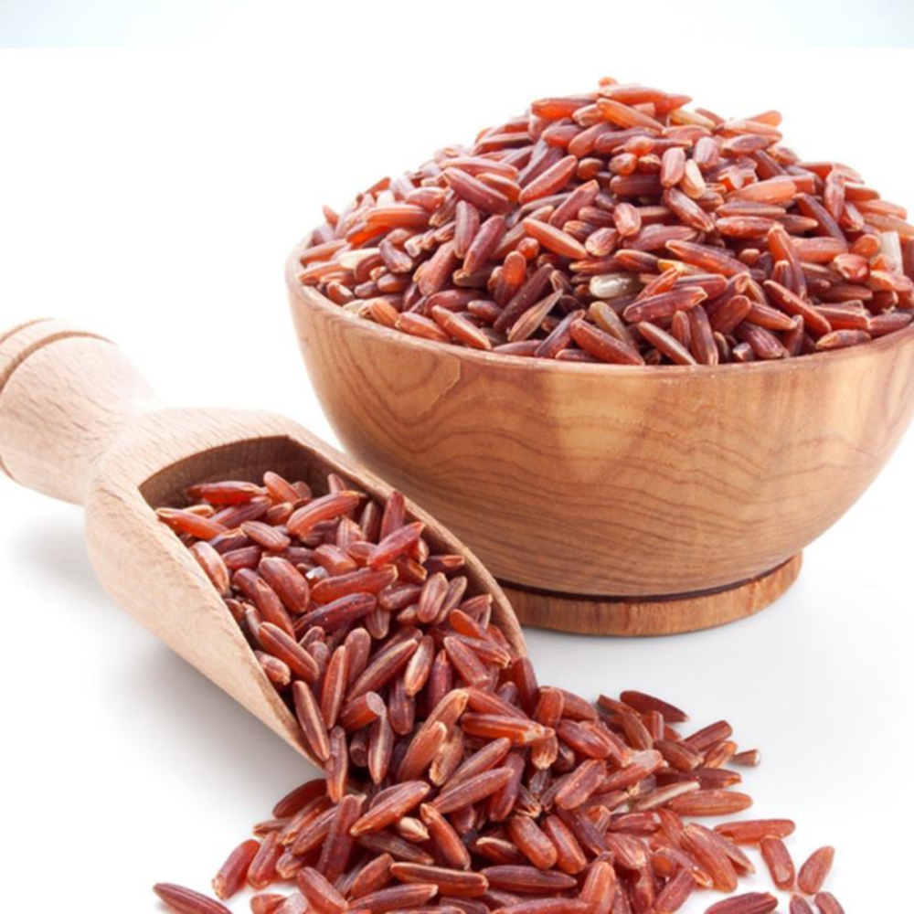
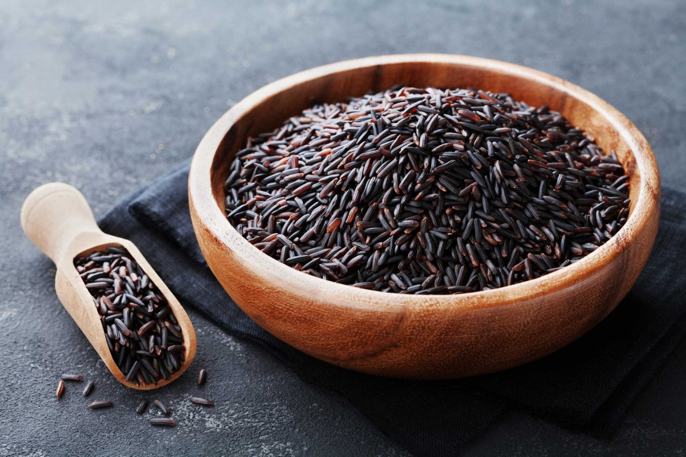
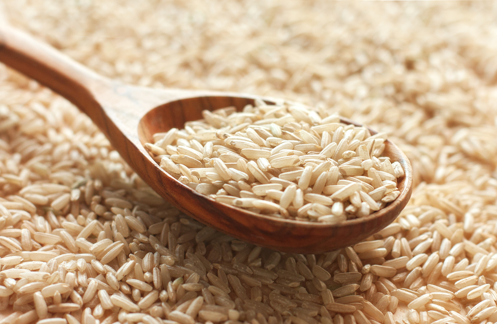
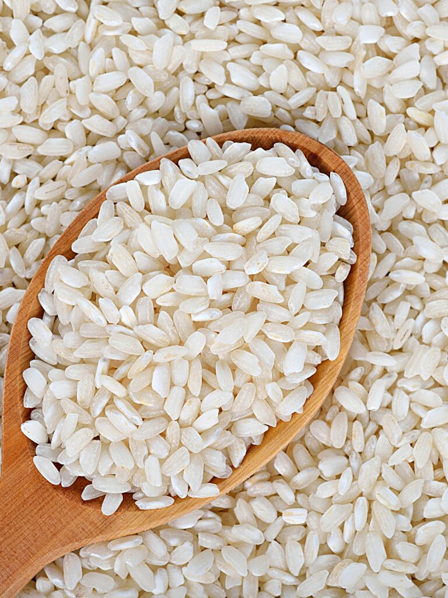
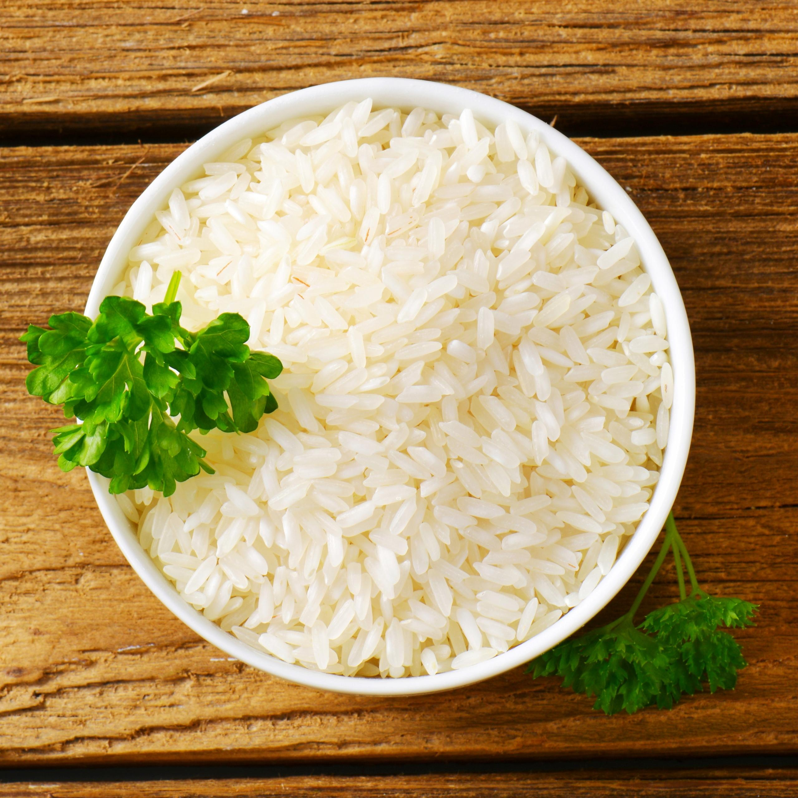
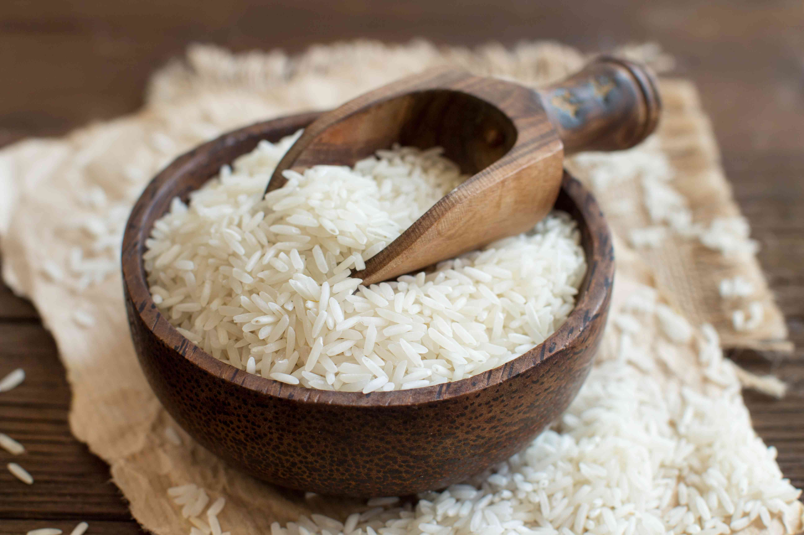
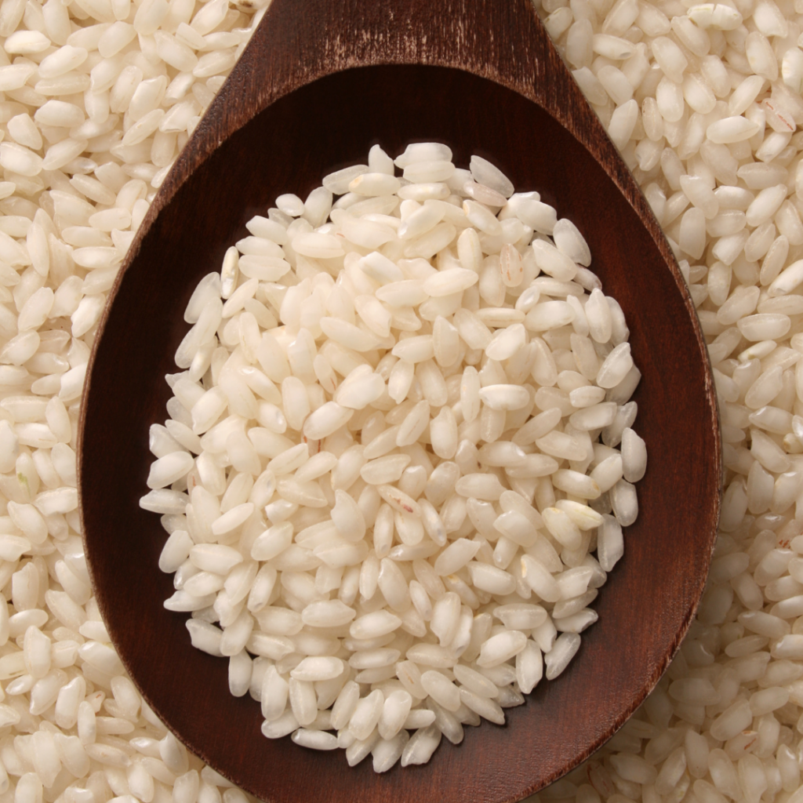

Explore the global heritage of rice farming with our guide to the 9 most popular types of rice cultivated around the world. From fragrant Basmati to creamy Arborio, discover recipes, cooking tips, and the rich traditions behind each variety.
Glutinous rice or more informally, sticky rice, is a variety native to Southeast and East Asia. Sticky rice only contains amylopectin, so you can be sure it lives up to its name. Its grains are short, opaque, and can be eaten with the bran intact as brown sticky rice, or with the bran removed as white sticky rice. It’s perfect for rolling sushi together or indulging in the classic Thai dessert mango sticky rice. Traditionally, sticky rice is steamed in a bamboo basket, which allows the rice to evenly and gradually release its starch. Though if you’re not keen on owning more cookware, we understand. Here’s a guide on how to cook it with any old regular pot you have on hand.
Just as peanuts aren’t actually nuts, precisely is the case with wild rice, which is actually a species of grass native to North America. It’s long, lean, and imparts a distinctly earthy, nutty flavor. As a double misnomer, round about 90 percent of the wild rice on the shelves is not wild, but in fact, cultivated. Its color ranges from light brown to nearly black and it’s a sturdier grain, so you can expect to steam, boil, or bake it for at least 45 minutes. That said, if you’d like more specific instructions, give our guide on preparing wild rice a read. It cooks up tender with a bit of chew, so it’s lovely in a fluffy pilaf or even a quiche.
Unlike most rice varieties, red rice is eaten with its hull and all, making it exceptionally nutritious. Its rustic red hue is due to its high content of anthocyanins, a type of antioxidant. To cook red rice, use your routine strategy with the exception of one detail: Add about one and a half times the water as usual so it softens well. Savor it in the classic dish, Lowcountry red rice with ham, or pair it as a side to salmon in Thai red curry sauce.
REqually as mysterious as its dark hue, black rice has a few aliases, depending on which variety you choose. Chinese black rice is also referred to as forbidden or Emperor’s rice, due to its historical importance to the elite in China. Black sticky rice is similar in taste and texture to white sticky rice, and black Japonica rice is a crossbreed between short grain black rice and medium grain mahogany rice, so its grains aren’t quite as dark in appearance. To cook black sticky rice, use the same guidelines for white sticky rice, whereas to cook Chinese black rice and black Japonica rice, work with a 2 to 1 ratio of water to rice. Swap in black sticky rice in this recipe for Japanese rice stuffed tofu pockets or contrast the cool colors of this Thai green curry with either black Chinese or Japonica rice.
Brown rice is simply any variety of rice that has only had its hull removed, leaving the bran and germ intact. Despite the fact that it has more fiber and nutrients than white rice, some still prefer the suave texture and flavor of white rice. Its length varies from short to long so how you cook your brown rice depends accordingly, but we have a guide for that. Ladle this wild mushroom cream sauce over top your brown rice, or use it in this sweet and saucy Thai vegetarian pineapple fried rice.
Bomba is Spanish for bomb, which is a well-suited name, given how it can absorb two to three times its weight in liquid before bursting. This property makes it the go-to rice for dishes with frothy, brothy bases like Spanish paella or arroz al horno. Bomba, or Valencia rice, has a very short grain and because it is high in amylose, you’ll want to use at least a 3 to 1 water to rice ratio when you prepare it.
Jasmine rice is named after the flower, which is native to Asia and is cultivated for its rich fragrance. It’s native to Thailand and much like the flower, you’ll notice it too has a lovely aroma. Jasmine rice has a long grain and a higher amylopectin content than average, so it will be a bit sticky when cooked. To prepare it, you’ll need a 1 1/2 to 1 water to rice ratio, as well as a few other tips found in this guide. Let its nutty flavor do the work for you in this simple stir-fried rice with kale dish, or serve it as a side with fried fish with sambal sauce.
Have you ever been to an Indian or Middle Eastern restaurant and marveled at how the rice is served, fluffy and billowing with steam? This, friends, is basmati rice, a long-grain variety that originates from India. It’s high in amylose and its texture is truly improved by soaking it in warm water for about 30 minutes. To cook it, use a 1 1/2 to 1 water to rice ratio and to serve it, consider a Mughlai biryani or halal cart chicken.
Arborio rice is native to the Piedmont region in Italy and is the rice of choice for risotto. It's short and plump in shape and has a high amylopectin content, so it renders rich and creamy when cooked. That said, if you’re not in the market for this texture, you can rinse your arborio rice first and use either the stovetop or rice cooker method. If thoughts of risotto don’t move you, enjoy fontina and mozzarella arancini or Florentine rice pudding tarts.
